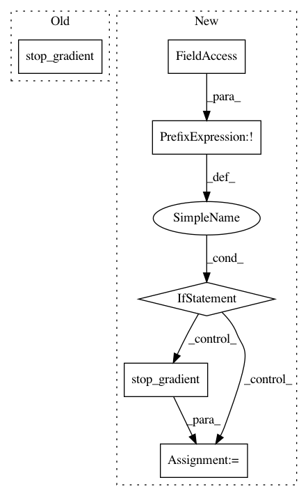

446a47f0e996fbae4e6bded7ef746ae329354511,sac/distributions/gmm.py,GMM,_create_graph,#GMM#,79
Before Change
xz_sig_t = tf.boolean_mask(xz_sigs_t, mask_t) // N x Dx
// Sample x.
x_t = tf.stop_gradient(
xz_mu_t + xz_sig_t * tf.random_normal((N_t, Dx))
) // N x Dx
// log p(x|z)
log_p_xz_t = self._create_log_gaussian(
After Change
// Sample x.
x_t = xz_mu_t + xz_sig_t * tf.random_normal((N_t, Dx)) // N x Dx
if not self._reparameterize:
x_t = tf.stop_gradient(x_t)
// log p(x|z)
log_p_xz_t = self._create_log_gaussian(
xz_mus_t, xz_log_sigs_t, x_t[:, None, :]
) // N x K
In pattern: SUPERPATTERN
Frequency: 3
Non-data size: 6
Instances
Project Name: rail-berkeley/softlearning
Commit Name: 446a47f0e996fbae4e6bded7ef746ae329354511
Time: 2018-05-22
Author: azhou42@berkeley.edu
File Name: sac/distributions/gmm.py
Class Name: GMM
Method Name: _create_graph
Project Name: rail-berkeley/softlearning
Commit Name: 1dc9a3dc16d6c9b3cb600ecc5599a9dc5b6747e9
Time: 2018-06-18
Author: azhou42@berkeley.edu
File Name: softlearning/distributions/gmm.py
Class Name: GMM
Method Name: _create_graph
Project Name: rail-berkeley/softlearning
Commit Name: af243b02b5e2976108066a263ba5510267bfa1ce
Time: 2018-05-22
Author: azhou42@berkeley.edu
File Name: sac/distributions/gmm.py
Class Name: GMM
Method Name: _create_graph